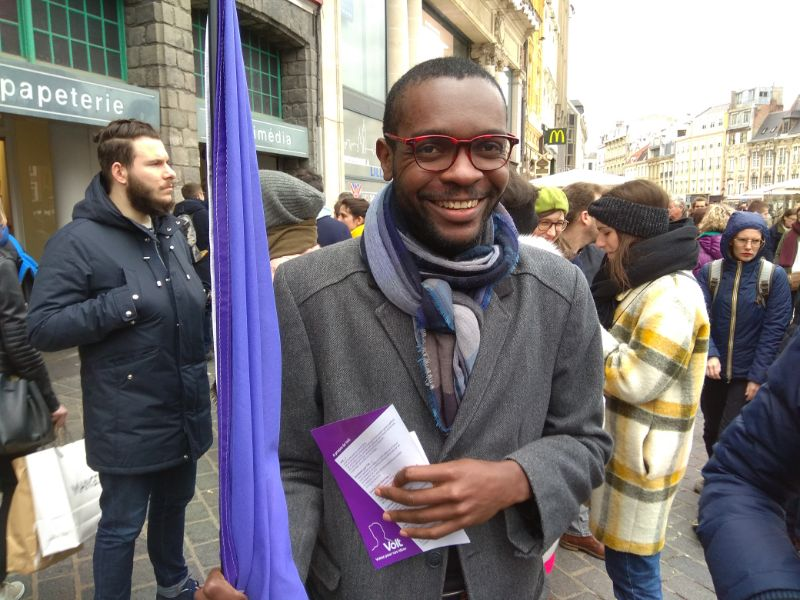
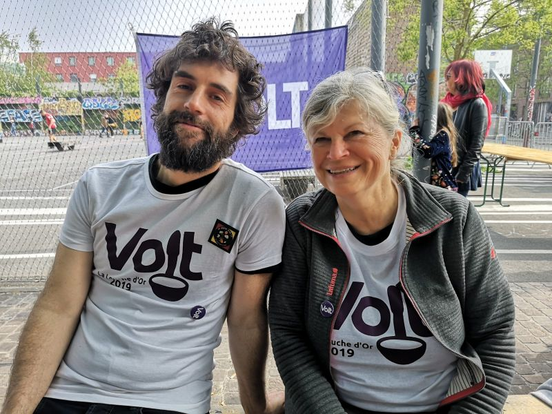
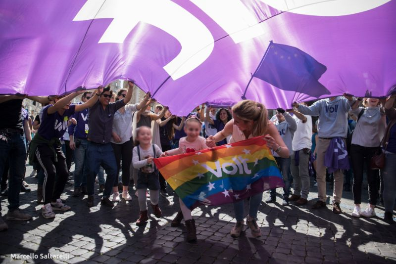

Notre démarche
La politique. Faites par les citoyens. Pour les citoyens
Volt est un mouvement citoyen. Nous croyons qu'une société ne peut exister et se développer qu'il donne une voix au chacun.e et s'il essaye de mettre en œuvre un ordre du jour qui ne laisse personne sur compte - en trouvant le terrain commun et canon entre les voix fortes et faibles. Selon ce principe signifie plus gouvernance avec des citoyens que gouverner les citoyens. Plus de temps à écouter qu'à parler. Plus de mesures spécifique qu'administration bureaucratique et du planning. Enfin, il signifie plus d'effort parce que les décisions devront être prises basés sur l'intérêt de plusieurs plutôt que quelques seuls. À Volt, nous sommes les volontaires qui partagent cette idée d'une responsabilitation de citoyens et de réinventer la politique à ce qu'elle doit être : faites par les citoyens pour les citoyens.
Les Élections Municipales 2020
Pour accomplir notre objectif, notre but pour les élections municipales 2020 est à rassembler une liste de citoyens pour participer aux élections.
Nous voulons trouver les meilleurs candidat.e.s pour représenter nos communautés, pour implémenter nos idées, pour être attentive aux besoins et souhaits de la citoyenneté - nous n'exigeons pas de poids et bilans politiques, mais ceux, qui sont capables de travailler avec les gens, qui peuvent faciliter et qui soient prêts à prendre la responsabilité qui viendra avec potentiellement être élus. Notre liste est ouverte aux citoyens. Nous n'avons pas un ordre hiérarchique - les positionnements seront déterminés par un vote entre les membres officiels de Volt Lille en base de la présentation et l'engagement de chaque candidat.e.
Unis dans la diversité
Nous espérons pouvoir rejoindre de s'unir avec les autres initiatives citoyens et aussi des autres partis politiques qui partagent nos idées et valeurs - sur notre liste, dans une liste en commun ou en envoyant nos candidats pour représenter Volt dans une autre équipe. Si la diversité d'une citoyenneté est notre avantage principal, il ne doit pas travailler contre nous pendant les élections. Nous serons heureux de collaborer avec les amis et alliés et reposer nos divergences programmatiques jusqu'à ce qu'ils comptent, parce que cela qui compte pour nous est d'avoir une représentation des citoyens élus.
Quelle objectives ?
Volt s'efforce d'être participative. Nous espérons trouver des citoyens qui participent ans nos initiatives, mais nous souhaitons aussi contribuer dans des associations et autres groupes de citoyens, pour collaborer, discuter et recueillir des idées pour notre programme politique éventuelle. Volt est aussi un mouvement progressif. Nos propositions pour les sujets les plus pressants seront ambitieux - la pollution, le transport en commun, la gestion des logements, la situation d'emploi, la sécurité - il existe beaucoup d'enjeux pour qui nous avons besoin de trouver une solution en court terme, donc nos idées doivent être audacieuses. Enfin, Volt est un mouvement pan-européen avec des équipes partout en Europe pour échanger et trouver les meilleures pratiques applicables ici à Lille. Peu importe ce que l'on devrait faire, nous plaiderons pour nos propositions d'être mis en oeuvre, arguer pourquoi ils peuvent être adopte et nous espérons avoir l'occasion de les implémenter nous-mêmes.
Vous en faites parti
C'est la devise pour notre élection. Pourquoi ? Puisque la vie à Lille (et ailleurs) se semble compliqué et accablant parfois. Comme un gros puzzle. Mais si nous essayons de connecter les morceaux, nous commençons à avoir une vue d'ensemble. Les plus morceaux nous sommes capables de connecter - ça va dire le plus les citoyens participent - les plus stables ces connections seront et les plus visibles leurs besoins. Chacun d'entre nous en faites parti de cette structure, qui représente nos communautés et notre société dans son ensemble. Chacun qui ne peut pas participer, chacun qui n'est autorisé pas à participer et chacun qui ne veut pas participer laisse un écart. Notre but pour les élections municipales 2020 est de laisse aucun écarts et de compléter cette puzzle de Lille. Donc "Vous en faites partie" ! Et nous serions heureux, si vous désirez soutenir notre projet.